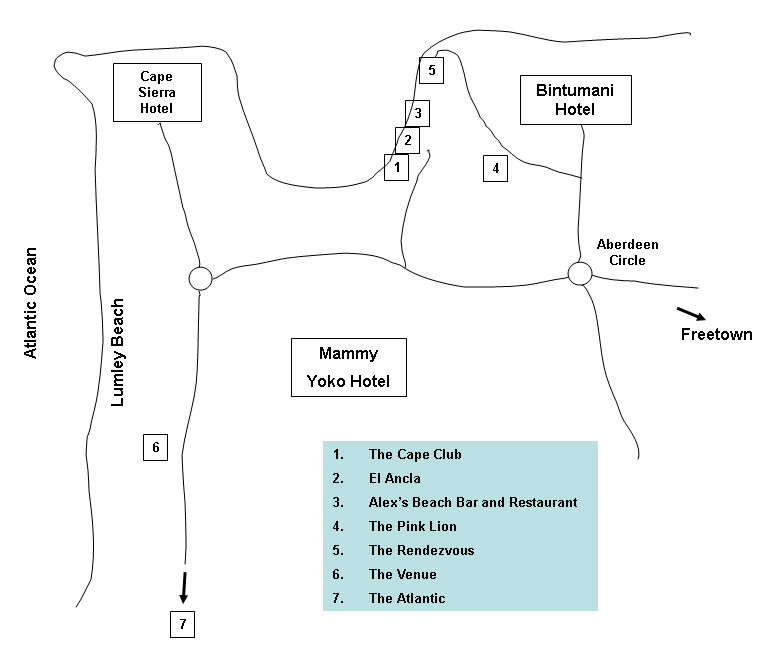

Freetown "Ethnic" Restaurant Guide (1988)
Once when I was visiting a friend in Eugene, Oregon, he made a wry
remark about having moved from a town with the highest number of
churches per capita (Turlock, CA) to one with the largest number of
restaurants per capita and how it reflected upon his evolving
existential priorities. I have doubts about the accuracy of those
statistics, but concerning Freetown I can state confidently that it is
the national capital with the fewest number of customers per
restaurant. Aside from a few exceptions, you will invariably be
served by at least a half dozen waiters who are open to conversation
since they have nothing else to do. One time a Peace Corps volunteer
who was dining with me whipped out his ever-ready AIDS pamphlet while
waiting for dinner and started doling out condoms to the bemused but
accepting waiters. One of them, an ex-seaman (no pun intended), was
already using birth control; "Two children are enough," he said.
Enlightenment and mass number aside, nevertheless, the level of
services is, shall we say, erratic on the whole. I will never forget
the spring of '87, right before Brookfields (alias Killing Fields) had
raised their Peace Corps rates, when volunteers' dinner choice was
reduced to the canned-protein-of-the-day (i.e., Third World SPAM or
sardine) salad. Epic 3-1/2-hour dinners were common as manic-patient
PCVs waited on sheer principle for the constipated flow from the
kitchen to culminate in that tepid cup of tea ("Sugar and
milk, please."). To be fair, though, the quality of food at BF is not
bad (and besides, the PC rate is only 1/4 of the normal price), and
there are some pleasant surprises awaiting those of you not familiar
with the Freetown gastronomic circuit.
(Note: The "ethnic" in the title means that we cover only restaurants
serving non-Sierra-Leonean food. There are a few excellent chop
houses serving local cuisine in Freetown--to be covered in another
review.)
Downtown Area
Old Roots, New Seeds
Simply the best food in Freetown. Everything on the menu is good--the
cheese fish steak on Friday and the seafood gumbo are special
standouts. Nutritionally well-balanced, but servings may be somewhat
small for bigger appetites. Also the vegetarian menu for lunch is
worth checking out. Setting: Hip Afro-American. Served by beautiful
young ladies. Music: Popular contemporary jazz. Prices: High.
Paramount Hotel
Recent improvement in food has rescued their dishes from a pervading
blandness. Shrimps Freetown recommended. Excellent service.
Setting: Stamped orange plastic chairs = tacky. Music: Muzak and
country/western. Prices: Very reasonable.
Don Salvador's
Take out pizza! But don't get excited--it's not quite the real
thing. Be careful when you order toppings--"ham" might mean "SPAM"
that day. The paella is nice. But the best thing about this place is
the chilled, crinkly balls of garlic butter served with hot bread
before dinner. Setting: The most formal and elegant in the city.
Music: Vaguely Spanish. Prices: Painfully high.
The Golden Bay
Large menu of quality Lebanese food. Suggestion: A full meza (12
appetizer dishes) will let you sample all those strage-sounding items
you were always curious about (e.g., pan-fried goat brains); there's
enough to feed 2-3 people. Setting: Clean, bright, modern. Music:
Western pop. Prices: Very high.
The Gem
This is one place I personally never tried, but I understand that it
is very similar to the Golden Bay, except older and darker inside.
Uncle Sam's
Contrary to the name, it's a British expatriate haunt. Standard
Lebanese menu. Standard quality, sub-standard portions. The hummus
(spelled "homos" on the menu) is good. "All sandwiches are taken
away." Setting: Greasy spoon. Music: Country/western. Prices:
Medium.
Alliance Francais
There's nothing French about the food. Grill menu--hamburger, pork
chop, chicken. The Tropical Cooler is a drink you'd expect to find
everywhere but is unique to this place. Setting: Expatriate city.
Decor is Western idea of "Africa." Music: Live music on certain
nights; check for posted notices. Prices: Moderate.
Lumley Beach Area

The Cape Club/El Ancla/Alex's Beach Bar and Restaurant
Run by three brothers, their menus are largely the same, and even
though El Ancla is nominally a Spanish restaurant, the cuisine leans
more towards northern Europe. Recommended items unique to each place:
CC--Beef Stroganoff (comes with mashed potatoes instead of noodles),
EA--Uruguayo steak (very filling), ABBR--yogurt cucumber soup.
Setting: CC--spacious and empty. Large dance floor, but no dancing.
Good view of the lagoon. EA--Plainest of the three. Extensive
collection of stickers (often bawdy) on the bar wall. ABBR--Tables
sit on sand. Palm trees. Very "tropical." Music: CC--Polkas and
marches. (That may be an exaggeration, but it's definitely not
up-to-date.) EA--A mix. Upon request George (the owner) will play a
tape of himself singing with a band. ABBR--Contemporary pop.
Prices: All high.
The Pink Lion
Limited menu of American-style food. Best beef Stroganoff in town.
Smallish portions. Setting: Austere poolside--tiled tables and
concrete seats (with padding). On hill, excellent view of beach.
Music: Pop, rock. Prices: Seems a bit high for the amount of food.
The Rendezvous
Typical Freetown menu with an Armenian twist. The Armenian chicken is
a spicy treat. Cheaper Star Beer than the other beach restaurants.
Setting: Dining area juts out over the water for a refreshing,
open-air atmosphere. Music: Various. Sometimes even heavy metal.
Prices: Seems lower than other beach places, but keep in mind the
service charge.
The Atlantic
Most extensive menu in Freetown. Excellent quality food. Pizza is
better than Don Salvador's. Stuffed grape leaves. Shrimp with
bacon. Veal. Lobster prepared in many different styles. Setting: On
the beach--waves breaking right in front of you. Invigorating.
Music: Surf sounds. Prices: A wide range, but generally high.
The Venue
A Lebanese menu with great appetizers like cheese pastry and
croquette. Best dinner value is the chicken kebab--lots of protein.
Setting: Casual beach. Very convenient for post-swimming,
in-the-bathing-suit dining. Music: Top 40. Prices: You pay for
convenience. (The cheeseburger is reasonable and is very popular.)
Red Pagoda (on Wilkinson Road)
It's a good change of pace, but it's not good Chinese food. Seems
like attempted Cantonese cuisine. Surprisingly big menu. Setting:
Busy. For some reason this place does good business (lack of
competing Asian restaurants, I guess). Music: A Chinese man plays
Chinese muzak on an electric organ. Very strange. Prices: Medium.
* * *
This review is by no means comprehensive, but to be honest there
aren't many more places to eat non-chop dinner in Freetown. There's
also a man who sells creatively upscale street food in the lot across
the street from the Strand Theatre (Scotch eggs, anyone?). Be bold.
Be daring. You can afford it.
I'm dedicating this guide to my fellow Fourah Bay College PCV, Kurt
Schulz, a.k.a Omega Man, who was my frequent dining companion. He may
not agree with my assessments here, but then again, he is one of the
world's pickiest eaters. One thing we did agree on was the superiority
of Old Roots, New Seeds' food. So check it out. Good eatings!
Return to travel story list.
Copyright 1988, John Nagamichi Cho